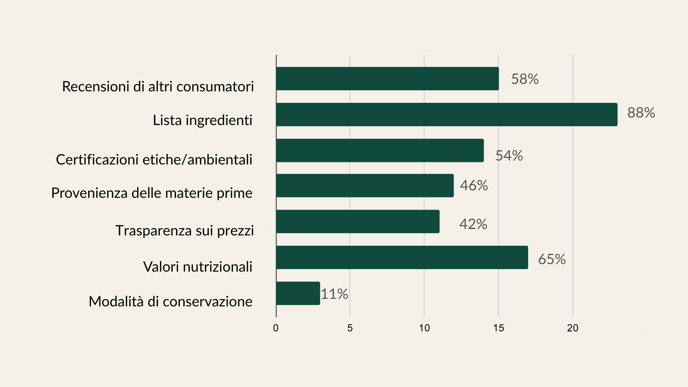
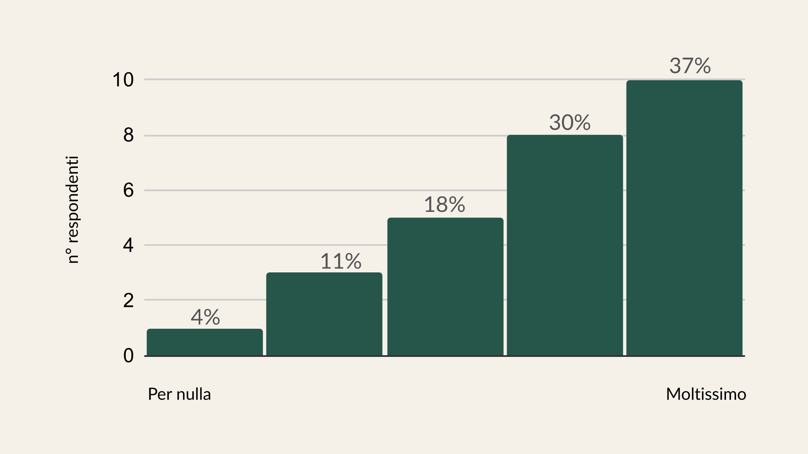

Visibilità dello stato del sistema
- Disponibilità dei prodotti non sempre chiara.
- Informazioni sulla spedizione gratuita poco visibili.
- Stato del carrello non sempre visibile nell’app.
DISCOVERY 01 · ANALISI AS-IS E COMPETITOR
Prima di intervenire sul redesign, il sito iVegan è stato analizzato per capire dove l’esperienza risultava poco chiara, incoerente o difficile da navigare.
La ricerca ha combinato analisi euristica, 3C del design, visual sitemap, benchmark dei competitor e una survey con utenti del target.
DALL'ANALISI ALLE CRITICITÀ
01 · ANALISI EURISTICA
Il sito è stato analizzato attraverso i 10 principi di usabilità di Jakob Nielsen, considerando desktop, tablet, mobile e app.
L’analisi ha evidenziato alcuni elementi già efficaci, come feedback del sistema e opzioni di filtro, ma anche criticità ricorrenti: categorie poco intuitive, informazioni importanti poco visibili, interazioni incoerenti e percorsi che richiedevano uno sforzo eccessivo per essere compresi.
02 · 3C DEL DESIGN
La lettura attraverso le 3C ha sintetizzato le criticità in tre aree: chiarezza comunicativa, organizzazione dei contenuti e consistenza dell’interfaccia.
La visual sitemap as-is ha poi reso evidente la frammentazione della struttura, permettendo di individuare ridondanze, percorsi poco lineari e contenuti difficili da raggiungere.
3C DEL DESIGN
Terminologia e percorsi non sempre immediatamente comprensibili.
Informazioni importanti frammentate in sezioni diverse.
Pattern e comportamenti differenti tra sito e app.
VISUAL SITEMAP · AS-IS
Più percorsi e livelli rendevano alcune informazioni difficili da raggiungere.
03 · COMPETITOR ANALYSIS
Il benchmark ha confrontato iVegan con competitor diretti specializzati nel mercato vegano, osservando struttura del sito, account e carrello, product box e principali leve di fiducia.
Il confronto ha mostrato esperienze generalmente più uniformi e complete, soprattutto nella gestione del carrello, nella consistenza delle schede prodotto e nella comunicazione delle informazioni d’acquisto.
BENCHMARK COMPETITOR
Pattern ricorrenti osservati nel confronto con e-commerce specializzati.
Gerarchia e categorie non sempre immediatamente comprensibili.
Categorie più chiare, riconoscibili e prevedibili.
Informazioni e stati del prodotto poco uniformi.
Schede prodotto più coerenti e complete.
Quantità, prezzo e azioni successive poco evidenti.
Informazioni e controlli principali sempre visibili.
Informazioni utili all’acquisto distribuite in più punti.
Recensioni e informazioni d’acquisto più visibili e accessibili.
04 · TARGET & SURVEY
Il target è stato approfondito attraverso dati demografici e sociografici e successivamente validato con una survey rivolta a persone vegane e vegetariane tra i 18 e i 35 anni.
Il questionario ha esplorato acquisto online, disponibilità dei prodotti, trasparenza, fiducia e principali frustrazioni del processo di acquisto.
Quali informazioni ritieni più utili in una piattaforma di spesa vegana/vegetariana online? (puoi scegliere più opzioni)

Quanto ti interessa sapere da quale paese provengono e in quale paese vengono lavorati i prodotti?

INSIGHT PRINCIPALE
Origine e lavorazione dei prodotti, certificazioni, recensioni, prezzi e spedizioni devono essere immediatamente comprensibili. Allo stesso tempo, navigazione e accesso devono richiedere il minor sforzo possibile.
DALLA RICERCA AL DESIGN